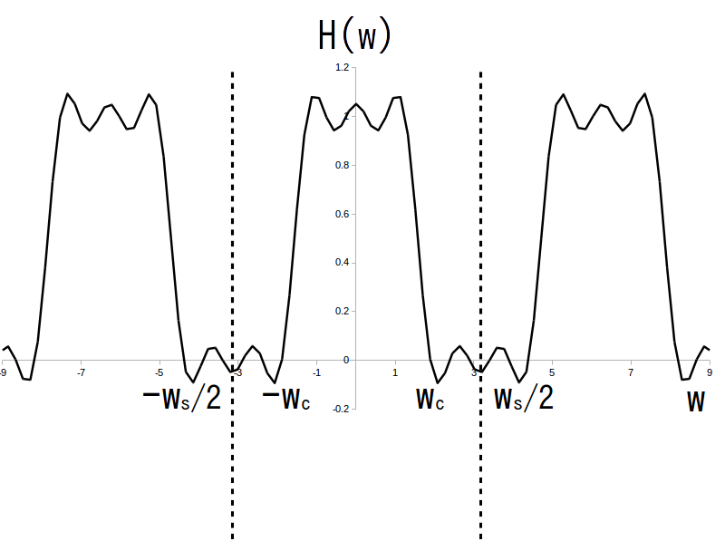

この学習項目ではFIR フィルタのインパルス応答 $h[i]$ を逆離散フーリエ変換により導出したいと思います。
FIR フィルタを考える前に、まずインパルス応答が時刻 $-\infty$ から $\infty$ まである仮想のディジタルフィルタを考えます。
このフィルタは時刻 $0$ にインパルス信号を入力する前からインパルス応答が出力されているという不思議なフィルタなので現実には存在しません(非因果的なディジタルフィルタと呼びます)。
それで、まずはこのフィルタのインパルス応答を Z 変換して伝達関数を求めます。
インパルス応答が時刻 $-\infty$ から $\infty$ まであるディジタルフィルタのことを非因果的なディジタルフィルタと呼び、その伝達関数は以下で表される。
\begin{align*} \textrm{H}(z) = \sum_{i=-\infty}^{\infty} \{ h[i] \cdot z^{-i} \} \end{align*}
ここで、$\sum$ の範囲が $-\infty$ から $\infty$ まであることに注意する。
今まで考えてきたような $\sum$ の範囲が $0$ から $\infty$ までのZ変換のことを片側Z変換と呼ぶが、$\sum$ の範囲が $-\infty$ から $\infty$ まであるZ変換のことを両側Z変換と呼ぶ。
この伝達関数に $z = \textrm{e}^{j \cdot w \cdot \tau}$ を代入して周波数特性 $\textrm{H}(w)$ を求めます。
ここで $\tau$ [秒] はサンプリング間隔です。
ここから少しトリッキーな話になりますが、どうせディジタル信号にはナイキスト角周波数よりも大きい角周波数のサイン波は含まれていませんし、因果性も無視していますので、周波数特性$\textrm{H}(w)$ の位相特性は 0 で、振幅特性が偶関数かつ周期 $w_s$ [rad/秒] で周期的であると仮定します。
ここで $w_s$ [rad/秒] はサンプリング角周波数です。
すると 周波数特性 $\textrm{H}(w)$ は実関数で、かつ周期性角周波数領域アナログ信号になります(図1)。
よってインパルス応答は $\textrm{H}(w)$ の逆離散フーリエ変換により求められます。
なお、$\textrm{H}(w)$ は偶関数と仮定したので
\begin{align*} h[i] = h[-i] \end{align*}が成り立ちます。つまり $h[i]$ も偶関数になります。
また当然ですが図1の $\textrm{H}(w)$ はただの例ですので、自分で好きに特性を決めても結構です。
今回はローパスフィルタの設計ですので、$\textrm{H}(w)$ としてカットオフ角周波数を $w_c$ [rad/秒] とした理想的なローパス特性をセットします(図2)。
$w_c$ ・・・ カットオフ角周波数、$w_c \leq w_s/2$、単位は[rad/秒]
図2の $\textrm{H}(w)$ に対して逆離散フーリエ変換を行ってインパルス応答を求めると、
\begin{align*} h[i] &= \frac{1}{w_s} \int_{-\frac{w_s}{2}}^{\frac{w_s}{2}} \left \{ \textrm{H}(w) \cdot \textrm{e}^{\{ j \cdot i \cdot w \cdot \tau \}} \right \} \textrm{dw} \\ &= \frac{1}{w_s} \int_{-w_c}^{w_c} \left \{ 1 \cdot \textrm{e}^{\{ j \cdot i \cdot w \cdot \tau \}} \right \} \textrm{dw} \\ &= \frac{1}{w_s} \cdot \frac{1}{ j \cdot i \cdot \tau} \left \{ \textrm{e}^{\{ j \cdot i \cdot w_c \cdot \tau \}} -\textrm{e}^{\{ -j \cdot i \cdot w_c \cdot \tau \}} \right \} \\ (オイラー公式より) &= \frac{1}{w_s} \cdot \frac{2}{ i \cdot \tau} \cdot \sin ( i \cdot w_c \cdot \tau ) \\ (\tau = 2\pi/w_s より) &= \frac{1}{\pi \cdot i } \cdot \sin \left [ \pi \cdot i \cdot \frac{w_c}{(w_s/2)} \right ] \\ (\alpha = \frac{w_c}{(w_s/2)} とおいて) &= \frac{\sin ( \pi \cdot i \cdot \alpha )}{\pi \cdot i } \end{align*}
となります。
なお $i=0$ の時は $\lim_{x\rightarrow 0} \sin(x)/x = 1$ の公式を使って $h[0] = \alpha$ になります。
また$f_s$ [Hz] をサンプリング周波数、$f_c$ [Hz] をカットオフ周波数とすると $\alpha = w_c/(w_s/2) = 2\pi f_c / ( 2\pi f_s /2 ) = f_c / (f_s/2)$ と変形できます。
すると $\alpha$ はカットオフ周波数 $f_c$ がナイキスト角周波数 $f_s/2$ の時に $\alpha = 1$ になるように正規化されていることになりますので、$\alpha$のことを「正規化カットオフ周波数」と言います。
以上をまとめると次のようになります。
$\alpha$ を正規化カットオフ周波数
\begin{align*} \alpha = \frac{w_c}{(w_s/2)} = \frac{f_c}{(f_s/2)} \end{align*}
とする。
ここで $w_c$ [rad/秒] と $w_s$ [rad/秒] はそれぞれカットオフ角周波数、サンプリング角周波数である。
また $f_c$ [Hz] と $f_s$ [Hz] はそれぞれカットオフ周波数、サンプリング周波数である。
すると非因果的な理想ローパスフィルタのインパルス応答は次の式で表される。
\begin{align*} h[0] = \alpha \end{align*} \begin{align*} h[i] = h[-i] = \frac{\sin ( \pi \cdot i \cdot \alpha )}{\pi \cdot i }\ ,\ (i = 1, 2, \cdots) \end{align*}
ただこれではインパルス応答が無限個存在する IIR フィルタになってしまうので、インパルス応答を途中で打ち切って無理やり FIR フィルタにします。
そのためにはまず FIRフィルタ長として適当な正整数 $\textrm{L}$ を決め(ただし $\textrm{L}$ は奇数とします)、次に正整数 $\textrm{C} = (\textrm{L}-1)/2$ を定義し、$h[-\textrm{C}]$ から $h[\textrm{C}]$ までの $\textrm{L}$ 個のインパルス応答だけ取り出します(図3)。
$\alpha = 0.5$、$\textrm{L} = 13$、$\textrm{C}=6$ の例
もちろん無理やりFIRフィルタにしたので周波数特性も変化します。
具体的には、$h[i]$ に $-\textrm{C}$ から $\textrm{C}$ までの範囲で両側Z変換を行って伝達関数
を求めたあと $z = \textrm{e}^{j \cdot w \cdot \tau}$ を代入して周波数特性を求めます。
\begin{align*} \textrm{H}(w) &= \sum_{i = -\textrm{C}}^{\textrm{C}} \left \{ h[i] \cdot \textrm{e}^{\{ -j \cdot i \cdot w \cdot \tau \}} \right \} \\ & = h[0] + \sum_{i = -1}^{-\textrm{C}} \left \{ h[i] \cdot \textrm{e}^{\{ -j \cdot i \cdot w \cdot \tau \}} \right \} + \sum_{i = 1}^{\textrm{C}} \left \{ h[i] \cdot \textrm{e}^{\{ -j \cdot i \cdot w \cdot \tau \}} \right \} \\ (h[i] = h[-i] なので) & = h[0] + \sum_{i = 1}^{\textrm{C}} \left [ h[i] \cdot \left \{ \textrm{e}^{\{ j \cdot i \cdot w \cdot \tau \}} + \textrm{e}^{\{ -j \cdot i \cdot w \cdot \tau \}} \right \} \right ] \\ \end{align*}最後の式にオイラー公式を適用すると、FIR フィルタの周波数特性が次のように出てきます。
\begin{align*} \textrm{H}(w) = h[0] + \sum_{i = 1}^{\textrm{C}} \left \{ 2 \cdot h[i] \cdot \cos (i\cdot w \cdot \tau ) \right \} \end{align*}
ここで
\begin{align*} h[0] = \alpha \end{align*} \begin{align*} h[i] = \frac{\sin ( \pi \cdot i \cdot \alpha )}{\pi \cdot i }\ ,\ (i = 1, \cdots, \textrm{C} ) \end{align*}
周波数特性のグラフ例を図4に示します。
このように、無限インパルス応答を途中で打ち切った影響で周波数特性が波打っているような形に変化します(図2と見比べてみましょう)。
この波打ち現象の事を「ギブズ現象」と言います。
さて、このギブス現象を軽減させるために実際にFIRフィルタを設計する際にはハミング窓などの「窓関数」がインパルス応答にかけられます。
ただ今回のアクティビティでは窓関数は扱いませんので、必要になった時に自分で調べて下さい。
$w_s = 2\pi$、$w_c = \pi/4$、$\alpha = 0.5$、$\textrm{L} = 13$、$\textrm{C}=6$ の例
以下準備中